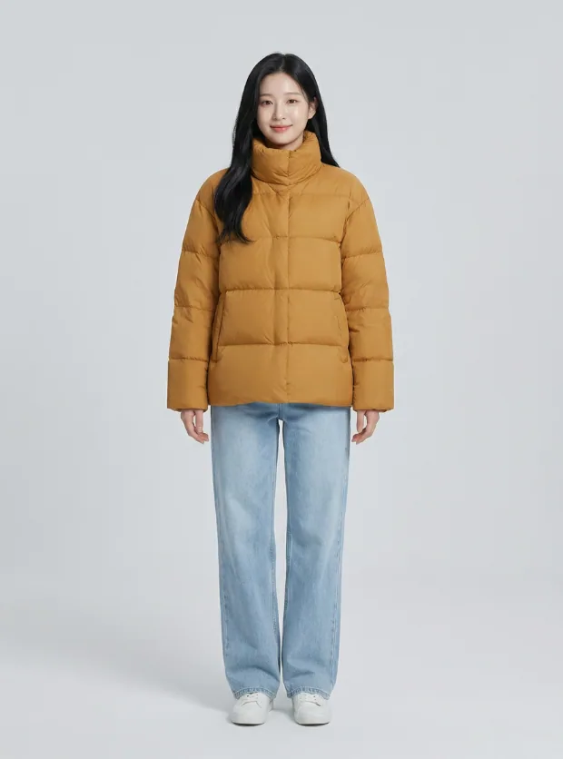
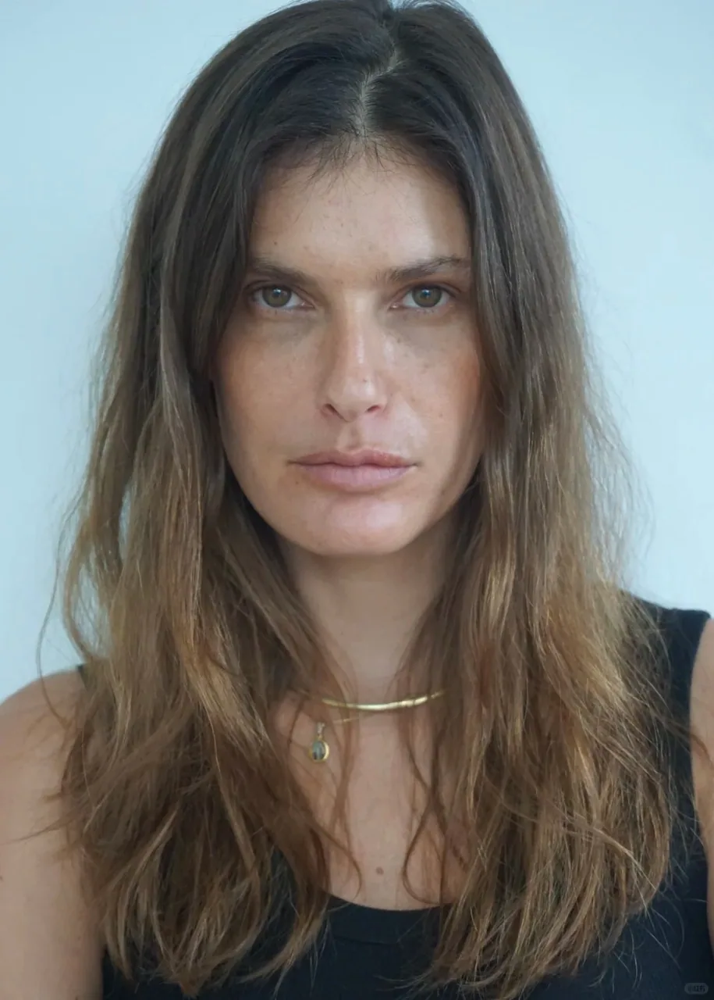
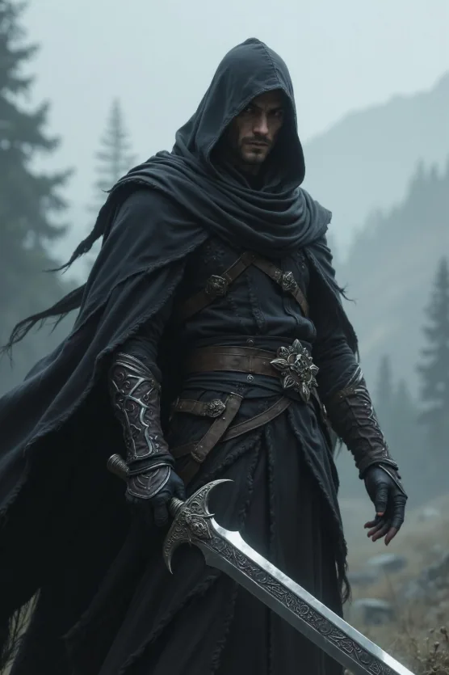
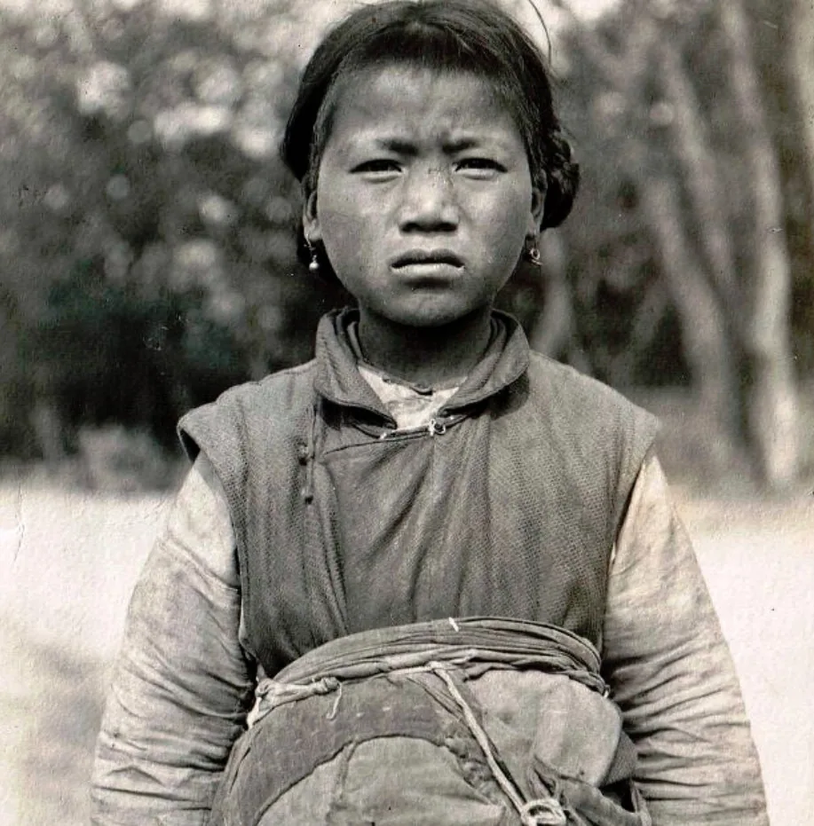
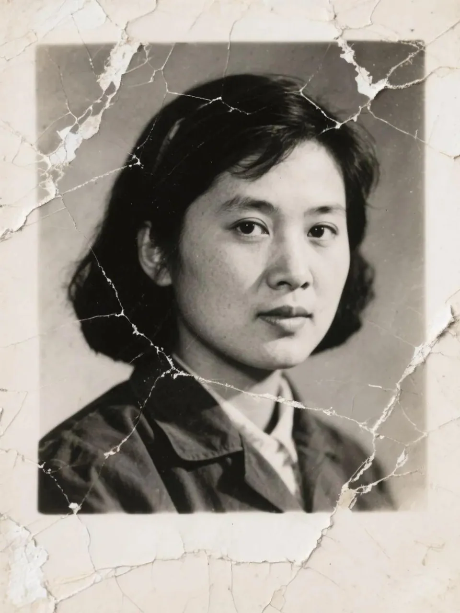
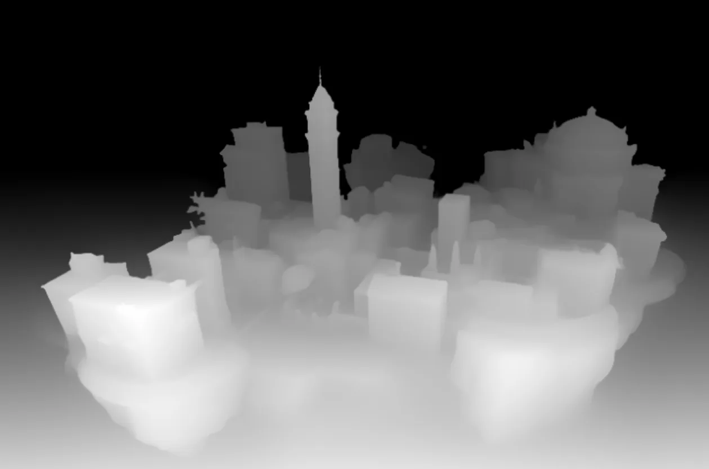
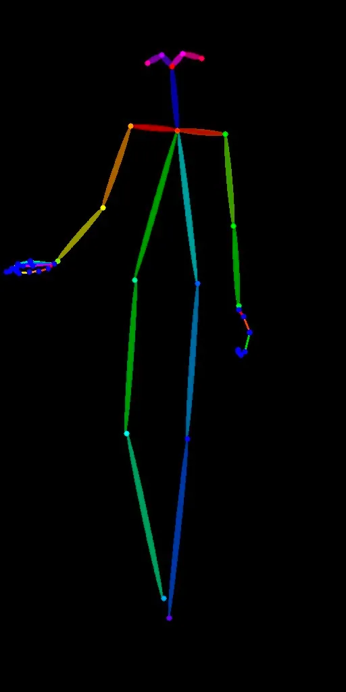
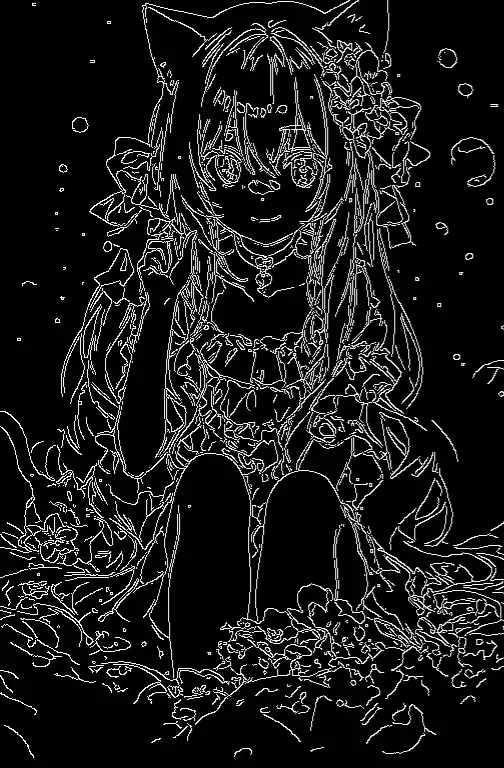
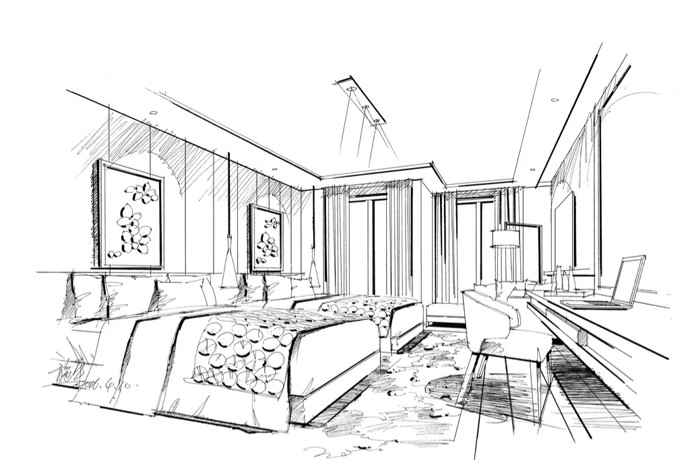

STEP 01
单图的智能精细编辑
4 栏 · 11 素材 · 0 提示词对单张图片做像素级控制，覆盖人像、超清修复与信息图生成三条能力线。
讲解要点01
- 人像编辑：换装、美妆、表情与发型、动作四类改写，人物主体需保持身份一致
- 超清修复：分「超清」与「修复」两条路径，分别处理清晰度与破损裂纹
- 信息图生成：深度图、骨架图、轮廓图、线稿图 —— 输出结构化线稿而非美学图片
实操任务02
- 人像编辑 4 张：换装 / 美妆 / 表情与发型 / 动作
- 修复类 2 张：超清 1 张、破损照片修复 1 张
- 信息图 4 张：深度图 / 骨架图 / 轮廓图 / 线稿图
成果产出03
- 10 张编辑结果图
- 质量红线：不出现明显错误、不出现与原图不像的偏差、结构图符合逻辑
课后延伸04
- 同一人物素材做多风格延续，验证身份一致性上限
- 把骨架图与线稿图作为后续分镜的构图参考
课程素材 · 人像编辑
4 张 · 接触印相
FIG-01人像素材 · 日常造型
FIG-02面部特写 · 换装与美妆参考
FIG-04暗黑风格人像 · 风格化参考课程素材 · 超清修复与信息图
7 张 · 接触印相
FIG-05黑白纪实人像 · 修复素材
FIG-07破损旧照 · 修复目标示例
FIG-08城市建筑深度图 · 信息图示例
FIG-09人体骨架图 · 信息图示例
FIG-10人物轮廓图 · 信息图示例
FIG-11室内设计线稿图 · 信息图示例